คู่มือใช้งานเครื่องมือ · ระดับ Free
แปลงหน่วยการไหลและความชื้นของอากาศอัด
Gas & Air Flow Unit Converter
FREE
สำหรับช่างเทคนิคที่เพิ่งเริ่มงานระบบอากาศอัด — อ่านแล้วทำตามได้เอง
ใช้เวลาฝึกประมาณ 60 นาที
เคสตัวอย่าง: โรงงาน A เครื่องอัดอากาศ 75 kW · FAD 10 m³/min · ระบบ 7 bar g
อ.หนึ่ง กลับทวี / Aj. Nueng Klubtavee
tripleeenergytools.com
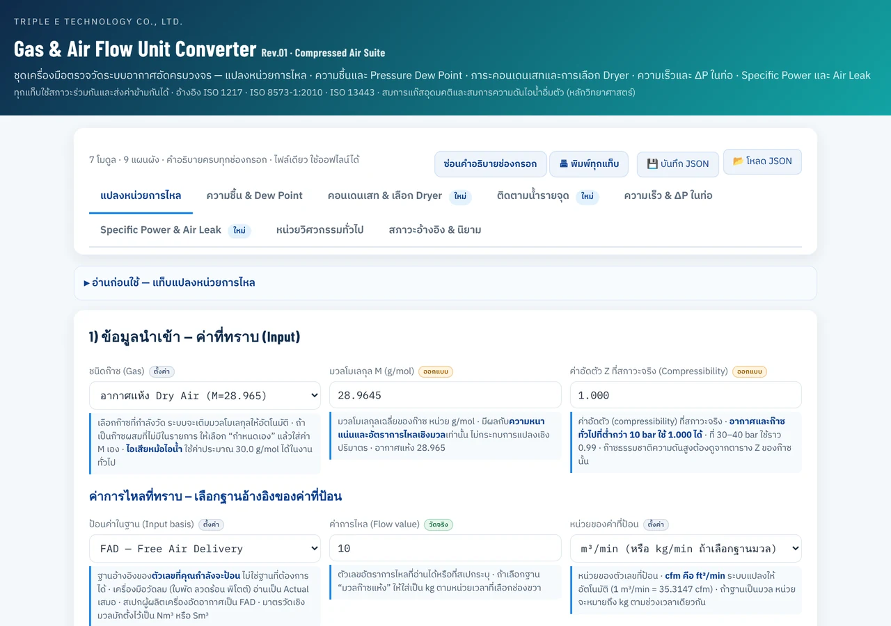
หน้าจอเครื่องมือ — เปิดได้จากเมนู Free ของเว็บไซต์
รุ่นเครื่องมือ: Free commit e22c4ca · จับภาพ 18 พ.ย. 2569 · คู่มือ Rev01
เครื่องมือนี้ตอบคำถามอะไร
คู่มือใช้งาน · แปลงหน่วยการไหลและความชื้นของอากาศอัด (Gas & Air Flow Unit Converter) · ระดับ Free
2 / 32
| คำถามหน้างาน | ใช้แท็บไหน | เคสโรงงาน A ได้ |
|---|---|---|
| ลม 10 m³/min FAD คิดเป็น Nm³ หรือ m³ ในท่อเท่าไร | แปลงหน่วยการไหล | 9.178 Nm³/min · 10.77 m³/min จริง |
| เครื่องวัดอ่าน PDP ในท่อ แต่สเปกเขียน ADP — เทียบกันอย่างไร | ความชื้น & Dew Point | PDP 3.0 °C = ADP -20.5 °C |
| ต้องระบายน้ำคอนเดนเสทวันละเท่าไร | คอนเดนเสท & เลือก Dryer | 16.22 kg/h ≈ 389.3 L/วัน |
| เครื่องทำลมแห้งชนิดไหนกินไฟน้อยที่สุดที่ PDP ที่ต้องการ | คอนเดนเสท & เลือก Dryer | Refrigerated dryer 1.75 kW |
| เครื่องอัดอากาศใช้ไฟต่อลมที่ผลิตคุ้มไหม | Specific Power & Air Leak | 7.50 kW/(m³/min) |
| ระบบรั่วกี่เปอร์เซ็นต์ เสียเงินเท่าไร | Specific Power & Air Leak | 15.0 % · 283,500 บาท/ปี |
💡 เคล็ดลับ
ทุกแท็บใช้ค่าร่วมกัน — FAD และสภาวะอากาศที่กรอกในแท็บแรกถูกส่งต่อไปแท็บอื่นอัตโนมัติ (แก้เองได้ทุกช่อง)
แผนที่หน้าจอ
คู่มือใช้งาน · แปลงหน่วยการไหลและความชื้นของอากาศอัด (Gas & Air Flow Unit Converter) · ระดับ Free
3 / 32
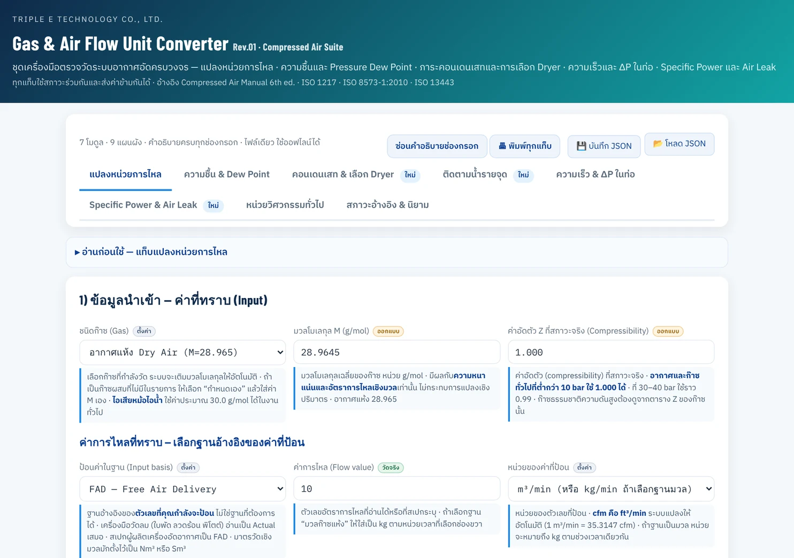
1
2
3
4
5
1
แท็บ 8 แท็บ — คู่มือนี้สอน 4 แท็บหลัก: แปลงหน่วย · ความชื้น · คอนเดนเสท · Specific Power
2
ซ่อน/แสดงคำอธิบายใต้ช่องกรอก
3
บันทึก / โหลด JSON — เก็บงานทุกแท็บในไฟล์เดียว
4
อ่านก่อนใช้ — กดเปิดอ่านหลักการของแท็บนั้น
5
การ์ดกรอกข้อมูล เรียงเป็นข้อ 1) 2) 3) ลงมาถึงผลลัพธ์
💡 เคล็ดลับ
ผลลัพธ์คำนวณทันทีที่พิมพ์ — ไม่มีปุ่มคำนวณ เลื่อนลงไปดูผลได้เลย
เปิดบนมือถือ สลับภาษา และป้ายสีข้างชื่อช่อง
คู่มือใช้งาน · แปลงหน่วยการไหลและความชื้นของอากาศอัด (Gas & Air Flow Unit Converter) · ระดับ Free
4 / 32
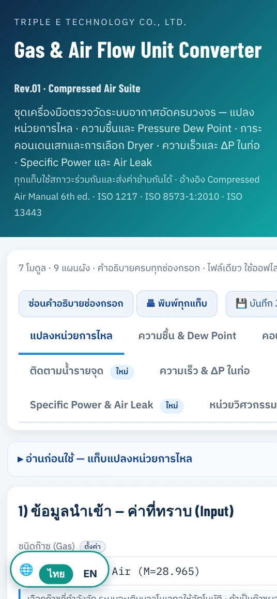
ใช้บนมือถือหน้างานได้ — การ์ดเรียงลงมาเป็นแถวเดียว
ปุ่ม 🌐 ไทย | EN ลอยอยู่ด้านข้าง กดสลับภาษาได้ ค่าที่กรอกไว้ไม่หาย
ป้าย วัดจริง = วัดหน้างาน · ออกแบบ = อ่านจากป้าย/สเปก · ตั้งค่า = เลือกเอง · คำนวณ = เครื่องมือเติมให้
ใต้ทุกช่องมีคำอธิบายบอกเครื่องมือวัดและช่วงค่าที่พบบ่อย
💡 เคล็ดลับ
จดค่าลงแบบฟอร์ม (สไลด์ 6) ที่หน้างานก่อน แล้วค่อยกรอก จะผิดน้อยกว่า
คำศัพท์ 7 คำที่ต้องรู้ก่อนเริ่ม
คู่มือใช้งาน · แปลงหน่วยการไหลและความชื้นของอากาศอัด (Gas & Air Flow Unit Converter) · ระดับ Free
5 / 32
| คำ | ความหมายแบบสั้น | จำง่าย ๆ |
|---|---|---|
| FAD | ปริมาณลมที่เครื่องอัดผลิตได้ คิดที่สภาวะอากาศดูดเข้า | ตัวเลขบนสเปกเครื่องอัด |
| Nm³ / Sm³ | ปริมาตรที่แปลงไปสภาวะอ้างอิง 0 °C หรือ 15 °C · 1 atm · แห้ง | ใช้เทียบข้ามโรงงาน/ข้ามวัน |
| Actual (m³ จริง) | ปริมาตรที่สภาวะในท่อ ณ จุดวัด (อุณหภูมิ ความดันจริง) | ที่ flow meter บางชนิดอ่านได้ |
| PDP | จุดน้ำค้างที่ความดันในท่อ — อุณหภูมิที่น้ำเริ่มกลั่นตัวในท่อ | ตัวเลขที่ต้องต่ำกว่าท่อที่เย็นที่สุด |
| ADP | จุดน้ำค้างของอากาศชุดเดิมเมื่อคลายความดันเหลือ 1 atm | ต่ำกว่า PDP เสมอ |
| คอนเดนเสท | น้ำที่กลั่นตัวออกจากลมอัด ต้องระบายทิ้ง | ลมอัดคือเครื่องรีดน้ำจากอากาศ |
| Specific Power | kW ไฟฟ้า ÷ ลม m³/min FAD | ยิ่งต่ำยิ่งประหยัด |
⚠️ ระวัง
ตัวเลข "m³/min" ตัวเดียวกันมีความหมายต่างกันตามฐาน — ทุกครั้งที่จดหรือรายงาน ต้องเขียนฐานกำกับ (FAD · Nm³ · Actual)
เตรียมข้อมูลก่อนลงหน้างาน (แบบฟอร์มจดค่า)
คู่มือใช้งาน · แปลงหน่วยการไหลและความชื้นของอากาศอัด (Gas & Air Flow Unit Converter) · ระดับ Free
6 / 32
| หมวด | ข้อมูลที่ต้องจด | เครื่องมือวัด / แหล่งข้อมูล | ค่าโรงงาน A |
|---|---|---|---|
| อากาศดูดเข้า | อุณหภูมิ · ความชื้นสัมพัทธ์ ที่ช่องดูดของเครื่องอัด | เทอร์โม-ไฮโกรมิเตอร์ | 35 °C · 70 %RH |
| ลมที่ผลิต | FAD ตามสเปก หรือค่าที่ทดสอบได้ | ป้ายเครื่อง / สเปกผู้ผลิต / flow meter | 10 m³/min FAD |
| ความดัน | ความดันใช้งาน (bar g) ที่ทางออกเครื่องอัด | เกจความดัน | 7 bar g |
| ความชื้นในท่อ | PDP หลังเครื่องทำลมแห้ง · อุณหภูมิลมหลังอาฟเตอร์คูลเลอร์ | เครื่องวัดจุดน้ำค้าง · เทอร์โมมิเตอร์ | PDP +3 °C · 45 °C |
| ไฟฟ้า | กำลังไฟฟ้าที่วัดได้ของเครื่องอัด · ชั่วโมงใช้งาน · ค่าไฟ | Power meter · บันทึกชั่วโมง · บิล | 75 kW · 6,000 ชม. · 4.20 บาท |
| ทดสอบรั่ว | เวลา load / unload ช่วงไม่มีการผลิต | นาฬิกาจับเวลา | 45 · 255 วินาที |
⚠️ ระวัง
ห้ามเปิดฝาหรือถอดชิ้นส่วนที่มีความดัน · วัดไฟฟ้าโดยช่างไฟฟ้าผู้รับผิดชอบ · ทดสอบรั่วช่วงหยุดผลิตตามที่ฝ่ายผลิตอนุญาต
ขั้นที่ 1
แท็บแปลงหน่วย: ชนิดก๊าซและค่าการไหลที่ทราบ
คู่มือใช้งาน · แปลงหน่วยการไหลและความชื้นของอากาศอัด (Gas & Air Flow Unit Converter) · ระดับ Free
7 / 32
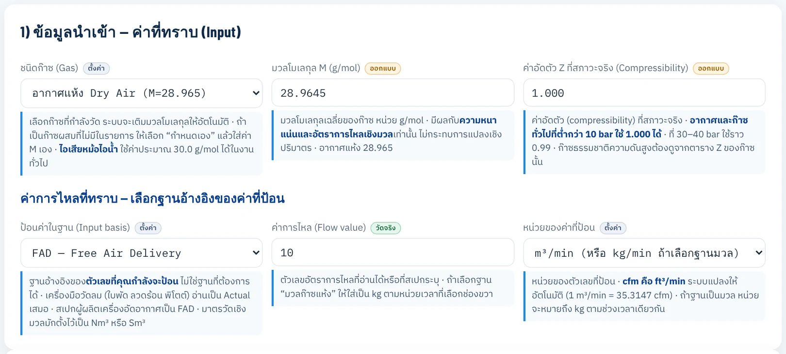
1
2
3
4
5
6
1
ชนิดก๊าซ — อากาศอัดเลือก อากาศแห้ง
2
มวลโมเลกุล — เติมให้อัตโนมัติ
3
ค่าอัดตัว Z — อากาศที่ต่ำกว่า 10 bar ใช้ 1.000
4
ฐานของตัวเลขที่จะป้อน — FAD · Normal · Standard · Actual · มวล
5
ตัวเลขการไหล
6
หน่วย — m³/min · m³/h · L/s · cfm
เลือกฐานให้ตรงกับที่มาของตัวเลข: สเปกเครื่องอัด = FAD · มาตรวัดเชิงมวล = Nm³ · เครื่องวัดความเร็วลมในท่อ = Actual
ขั้นที่ 2
สภาวะตรวจวัดจริง (ที่จุดวัด)
คู่มือใช้งาน · แปลงหน่วยการไหลและความชื้นของอากาศอัด (Gas & Air Flow Unit Converter) · ระดับ Free
8 / 32
1
2
3
4
1
อุณหภูมิก๊าซ ณ จุดวัด (°C)
2
ความดันสัมบูรณ์ (kPa abs) — ไม่ใช่ bar g
3
ความชื้นสัมพัทธ์ ณ จุดวัด (%)
4
ตัวช่วย: ใส่ความดันเกจเป็น bar แล้วกด ใส่ — ระบบแปลงเป็น kPa abs ให้
เคสโรงงาน A วัดที่ช่องดูดอากาศ: 35 °C · 101.325 kPa (บรรยากาศ) · 70 %RH
ถ้าวัดในท่อ 7 bar g ให้กรอก 7 ในตัวช่วยแล้วกด ใส่ → ได้ 801.325 kPa abs
ขั้นที่ 3
สภาวะอ้างอิงที่ใช้แปลง
คู่มือใช้งาน · แปลงหน่วยการไหลและความชื้นของอากาศอัด (Gas & Air Flow Unit Converter) · ระดับ Free
9 / 32
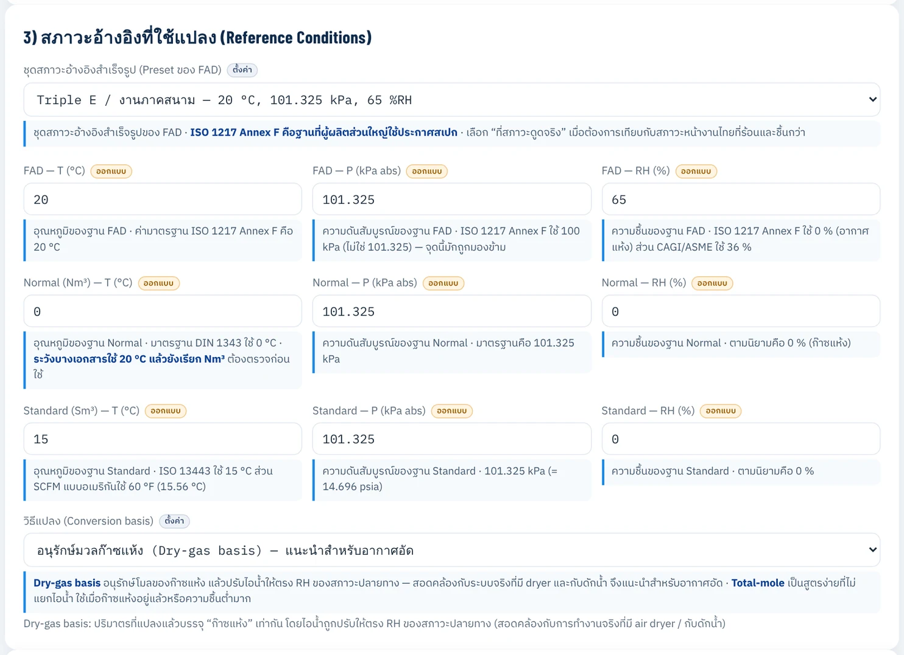
1
2
3
4
5
1
ชุดสภาวะอ้างอิงสำเร็จรูปของ FAD — งานภาคสนาม · ISO 1217 · CAGI · สภาวะดูดจริง
2
สภาวะของฐาน FAD (T · P · RH)
3
สภาวะของฐาน Normal — 0 °C · 101.325 kPa · แห้ง
4
สภาวะของฐาน Standard — 15 °C · 101.325 kPa · แห้ง
5
วิธีแปลง — อนุรักษ์มวลก๊าซแห้ง (แนะนำสำหรับอากาศอัด)
ใช้ค่าตั้งต้นได้เกือบทุกงาน — แก้เมื่อเอกสารที่ต้องเทียบระบุสภาวะอ้างอิงต่างไป เช่น บางเอกสารเรียก 20 °C ว่า Nm³
ระบุสภาวะอ้างอิงที่ใช้ในรายงานทุกครั้ง
ขั้นที่ 4
อ่านผลการแปลงหน่วย
คู่มือใช้งาน · แปลงหน่วยการไหลและความชื้นของอากาศอัด (Gas & Air Flow Unit Converter) · ระดับ Free
10 / 32
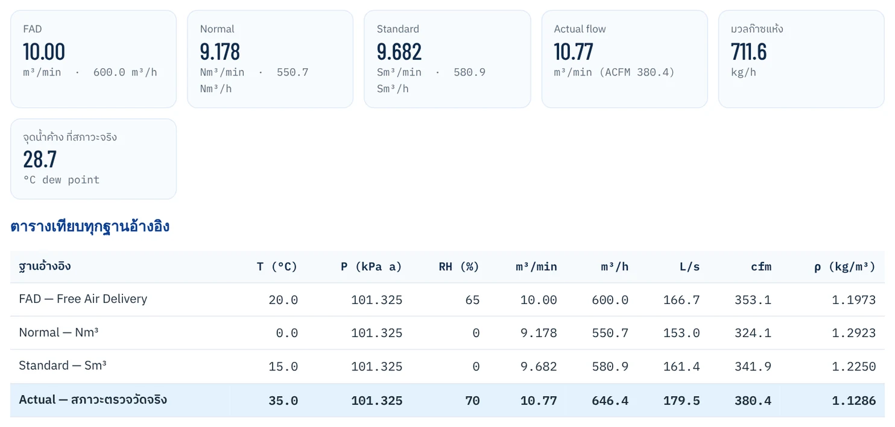
1
2
3
4
5
6
1
FAD 10.00 m³/min (ค่าที่ป้อน)
2
Normal 9.178 Nm³/min = 550.7 Nm³/h
3
Standard 9.682 Sm³/min
4
Actual 10.77 m³/min ที่ 35 °C (ACFM 380.4)
5
มวลอากาศแห้ง 711.6 kg/h
6
ตารางเทียบทุกฐาน — T · P · RH · m³/min · m³/h · L/s · cfm · ความหนาแน่น
Nm³ น้อยกว่า FAD เพราะเย็นกว่า (0 °C) และตัดไอน้ำออก — ลมชุดเดียวกัน แค่วัดด้วยไม้บรรทัดคนละอัน
ทวนอิสระ (สมการแก๊สอุดมคติ + ความดันไออิ่มตัว): 10 × (101.325 − 1.520)/101.325 × 273.15/293.15 = 9.178 Nm³/min ตรงกับเครื่องมือ
มวลและไอน้ำที่พาไปกับลม
คู่มือใช้งาน · แปลงหน่วยการไหลและความชื้นของอากาศอัด (Gas & Air Flow Unit Converter) · ระดับ Free
11 / 32
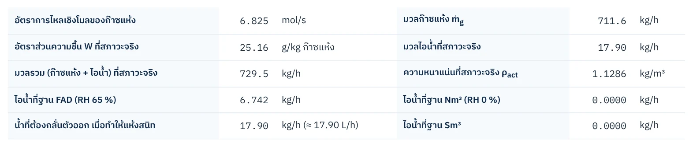
ที่สภาวะจริง อากาศ 1 kg แห้งพาไอน้ำ 25.16 g · รวมไอน้ำ 17.90 kg/h ไปกับลม 10 m³/min
ไอน้ำนี้คือที่มาของคอนเดนเสท — แท็บคอนเดนเสทจะบอกว่าแยกออกที่จุดไหนเท่าไร
ความหนาแน่นที่สภาวะจริง 1.1286 kg/m³ ใช้แปลงอัตราไหลเชิงปริมาตรเป็นมวล
💡 เคล็ดลับ
ปุ่มใต้ตารางส่งค่า FAD ไปแท็บอื่นได้ทันที — ไม่ต้องพิมพ์ซ้ำ
ลองเปลี่ยนค่า (What-if): ป้อนต่างฐาน ได้ FAD ต่างกันมาก
คู่มือใช้งาน · แปลงหน่วยการไหลและความชื้นของอากาศอัด (Gas & Air Flow Unit Converter) · ระดับ Free
12 / 32
| กรณี | FAD (m³/min) | Normal (Nm³/min) | Actual (m³/min) |
|---|---|---|---|
| โรงงาน A: สเปกเครื่องอัด FAD 10 m³/min | 10.00 | 9.178 | 10.77 |
| มาตรวัดเชิงมวลอ่าน 10 Nm³/min (เลือกฐาน Normal) | 10.90 | 10.00 | 11.74 |
| flow meter ในท่อ 7 bar g อ่าน 10 m³/min จริง (ฐาน Actual · 801.325 kPa · 35 °C · 10 %RH) | 76.33 | 70.05 | 10.00 |
ทำเอง: เปลี่ยนช่อง ป้อนค่าในฐาน และสภาวะตรวจวัดจริง → อ่านผล → แก้กลับเป็นค่าเดิม
อ่าน "10 m³/min" จากมาตรวัดในท่อความดัน 7 bar คือลม FAD ราว 76.33 m³/min — สับสนฐานเมื่อไร ตัวเลขผิดได้หลายเท่า
ขั้นที่ 5
แท็บความชื้น: กรอกค่าที่วัดได้
คู่มือใช้งาน · แปลงหน่วยการไหลและความชื้นของอากาศอัด (Gas & Air Flow Unit Converter) · ระดับ Free
13 / 32
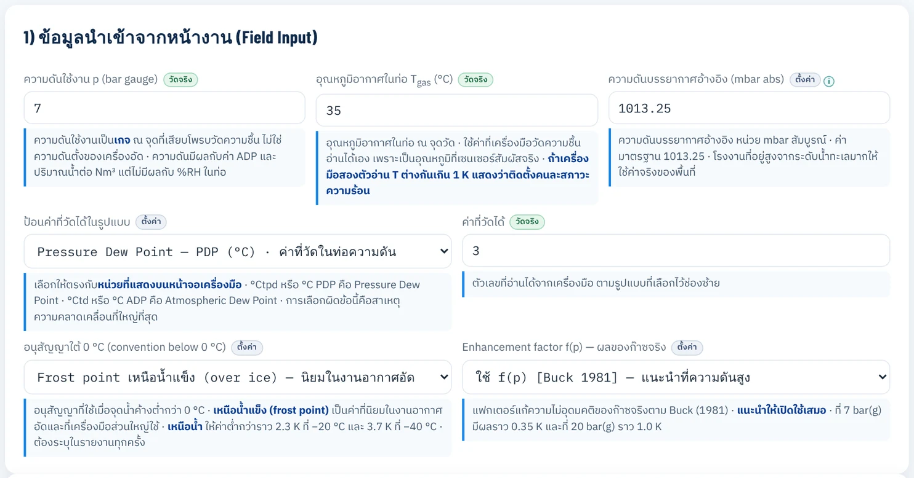
1
2
3
4
5
6
7
1
ความดันในท่อ (bar g)
2
อุณหภูมิลมในท่อ (°C)
3
ความดันบรรยากาศ (mbar abs)
4
ชนิดค่าที่วัดได้ — PDP · ADP · %RH · ppm · g/Nm³ · g/m³
5
ค่าที่วัดได้
6
ต่ำกว่า 0 °C ใช้ frost point (เหนือน้ำแข็ง) หรือ dew point (เหนือน้ำ) — ดูคู่มือเครื่องวัด
7
ตัวคูณแก้ความดันสูง f(p) — ใช้ค่าตั้งต้น
ดูให้แน่ว่าเครื่องวัดแสดงค่า PDP (ที่ความดันในท่อ) หรือ ADP (หลังคลายความดัน) — เลือกผิด ผลคลาดหลายสิบองศา
ขั้นที่ 6
อ่านผล: PDP กับ ADP และปริมาณน้ำ
คู่มือใช้งาน · แปลงหน่วยการไหลและความชื้นของอากาศอัด (Gas & Air Flow Unit Converter) · ระดับ Free
14 / 32
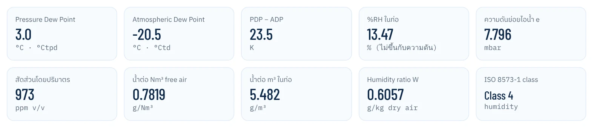
1
2
3
4
5
6
1
PDP 3.0 °C ที่ 7 bar g
2
ADP -20.5 °C — อากาศชุดเดียวกันที่ 1 atm
3
ต่างกัน 23.5 K
4
%RH ในท่อ 13.47 %
5
น้ำ 0.7819 g ต่อ Nm³ ลมอิสระ
6
ชั้นความชื้นตาม ISO 8573-1: Class 4
ทวนอิสระด้วย CoolProp: อิ่มตัวที่ 3 °C 8.013 bar abs → W 0.6059 g/kg → จุดน้ำค้างที่ 1 atm −20.5 °C ตรงกับเครื่องมือ
ADP ต่ำกว่า PDP เสมอ — สเปก "−20 °C" ที่ไม่ระบุว่า PDP หรือ ADP ต้องถามให้ชัดก่อนเลือก dryer
รูปที่ 1: อากาศชุดเดียวกัน รายงานได้สองค่า
คู่มือใช้งาน · แปลงหน่วยการไหลและความชื้นของอากาศอัด (Gas & Air Flow Unit Converter) · ระดับ Free
15 / 32
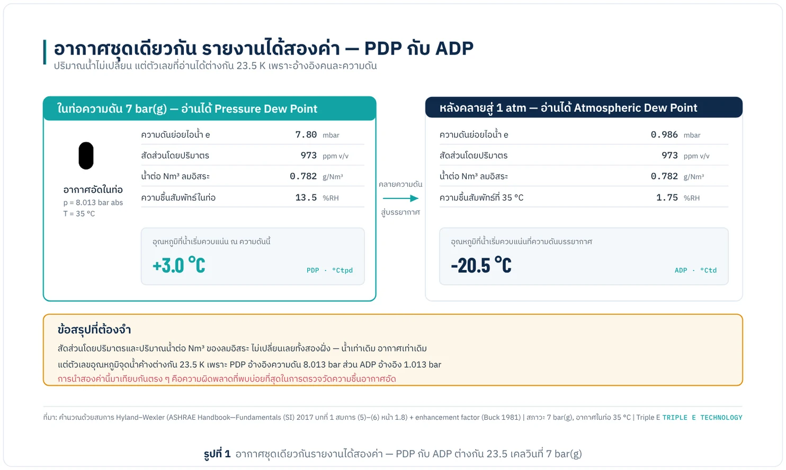
ซ้าย = ในท่อความดัน → อ่านเป็น PDP · ขวา = คลายความดันเหลือ 1 atm → อ่านเป็น ADP
ปริมาณน้ำต่อ Nm³ และสัดส่วน ppm เท่ากันทั้งสองฝั่ง — น้ำไม่ได้หายไปไหน เปลี่ยนแค่ความดัน
กล่องสีส้มด้านล่างคือข้อสรุปที่ควรจำ
💡 เคล็ดลับ
ใช้รูปนี้อธิบายผู้ซื้อ dryer ว่าทำไมสเปกต้องระบุ PDP หรือ ADP พร้อมความดัน
ตารางแปลง PDP → ADP ที่ความดัน 0–20 bar g
คู่มือใช้งาน · แปลงหน่วยการไหลและความชื้นของอากาศอัด (Gas & Air Flow Unit Converter) · ระดับ Free
16 / 32
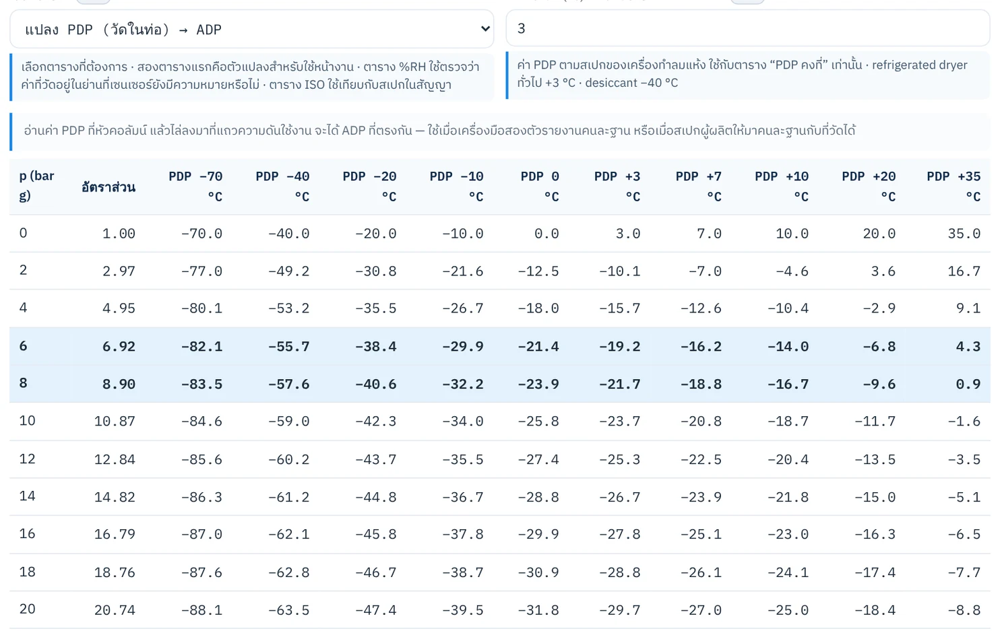
1
2
3
1
เลือกชนิดตาราง — ADP→PDP · PDP→ADP · %RH · ชั้น ISO 8573-1 ฯลฯ
2
แถว 6 bar g
3
แถว 8 bar g — สองแถวสีฟ้าคร่อมความดันใช้งาน 7 bar g
อ่านแถวความดันใช้งาน แล้วไล่ไปที่คอลัมน์ PDP ที่ต้องการ — ค่าในช่องคือ ADP
ใช้ตารางนี้ตอบเร็ว ๆ ที่หน้างาน หรือพิมพ์แนบรายงาน (ปุ่ม CSV / พิมพ์ ใต้ตาราง)
ลองเปลี่ยนค่า (What-if): PDP และความดันมีผลต่อ ADP อย่างไร
คู่มือใช้งาน · แปลงหน่วยการไหลและความชื้นของอากาศอัด (Gas & Air Flow Unit Converter) · ระดับ Free
17 / 32
| กรณี | PDP (°C) | ADP (°C) | น้ำ (g/Nm³) | ชั้น ISO 8573-1 |
|---|---|---|---|---|
| โรงงาน A: 7 bar g · PDP +3 °C (refrigerated dryer) | 3.0 | -20.5 | 0.7819 | Class 4 |
| ความดันเพิ่มเป็น 10 bar g PDP เท่าเดิม | 3.0 | -23.7 | 0.5747 | Class 4 |
| dryer ดูดความชื้น: PDP −40 °C ที่ 7 bar g | -40.0 | -56.7 | 0.0133 | Class 2 |
ทำเอง: แก้ช่องความดันหรือค่าที่วัดได้ในแท็บความชื้น → อ่านผล → แก้กลับ
PDP เท่ากันแต่ความดันสูงขึ้น ลมแห้งกว่าเมื่อคลายความดัน (ADP ต่ำลง)
ขั้นที่ 7
แท็บคอนเดนเสท: ข้อมูลระบบ
คู่มือใช้งาน · แปลงหน่วยการไหลและความชื้นของอากาศอัด (Gas & Air Flow Unit Converter) · ระดับ Free
18 / 32
1
2
3
4
5
6
7
8
1
FAD — ดึงจากแท็บแปลงหน่วยได้
2
ฐานของ FAD ที่ป้อน — แนะนำที่สภาวะดูดเข้าจริง (นิยาม ISO 1217)
3
อุณหภูมิอากาศดูดเข้า (°C) — ใช้วันที่ร้อนที่สุด
4
ความชื้นอากาศดูดเข้า (%RH)
5
ความดันใช้งาน (bar g)
6
อุณหภูมิลมหลังอาฟเตอร์คูลเลอร์ (°C)
7
ประสิทธิภาพ water separator (%)
8
PDP เป้าหมาย (°C)
ออกแบบขนาดกับดักน้ำและ dryer ให้ใช้วันที่อากาศร้อนชื้นที่สุด — ไม่ใช่ค่าเฉลี่ย
ขั้นที่ 8
อ่านผลสมดุลน้ำ
คู่มือใช้งาน · แปลงหน่วยการไหลและความชื้นของอากาศอัด (Gas & Air Flow Unit Converter) · ระดับ Free
19 / 32
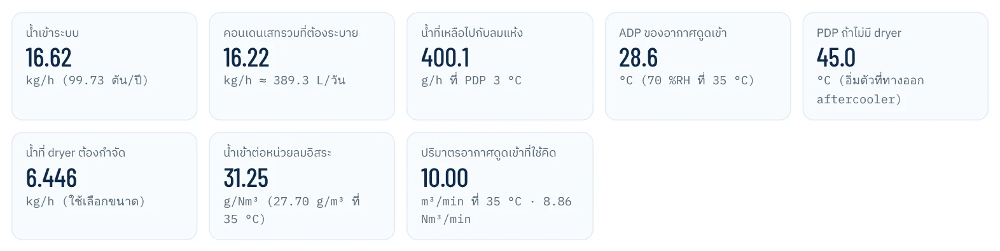
1
2
3
4
1
น้ำเข้าระบบ 16.62 kg/h (99.73 ตัน/ปี)
2
คอนเดนเสทรวม 16.22 kg/h ≈ 389.3 L/วัน
3
น้ำที่เหลือไปกับลมแห้ง 400.1 g/h
4
น้ำที่ dryer ต้องกำจัด 6.446 kg/h — ใช้เลือกขนาด dryer
อาฟเตอร์คูลเลอร์แยกน้ำได้มากที่สุด (9.775 kg/h) — dryer รับส่วนที่เหลือ
น้ำ 1 kg ≈ 1 ลิตร · กับดักน้ำต้องระบายได้ทั้งวันโดยไม่ทิ้งลม
คอนเดนเสทแยกตามขั้นตอน และวิธีคิด
คู่มือใช้งาน · แปลงหน่วยการไหลและความชื้นของอากาศอัด (Gas & Air Flow Unit Converter) · ระดับ Free
20 / 32
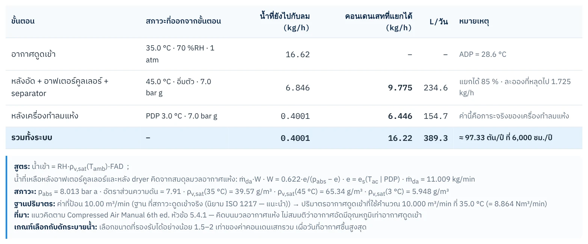
1
2
3
1
หลังอาฟเตอร์คูลเลอร์ + separator: แยกได้ 9.775 kg/h (234.6 L/วัน) · ละอองหลุดไป 1.725 kg/h
2
หลังเครื่องทำลมแห้ง: แยกได้ 6.446 kg/h (154.7 L/วัน)
3
กล่องสูตร — ที่มาของทุกตัวเลข
น้ำที่เหลือในลมคิดจากสมดุลมวลอากาศแห้ง: ṁ อากาศแห้ง × W อิ่มตัว (W = 0.622·e/(p − e)) ที่อุณหภูมิหรือ PDP และความดันสัมบูรณ์จริง
ทวนอิสระด้วย CoolProp: น้ำหลัง dryer 0.4003 kg/h · ภาระ dryer 6.436 kg/h (เครื่องมือ 0.4001 · 6.446) — ต่างไม่ถึง 1 %
รูปที่ 8: น้ำเข้ามาเท่าไร ถูกแยกออกที่ไหน
คู่มือใช้งาน · แปลงหน่วยการไหลและความชื้นของอากาศอัด (Gas & Air Flow Unit Converter) · ระดับ Free
21 / 32
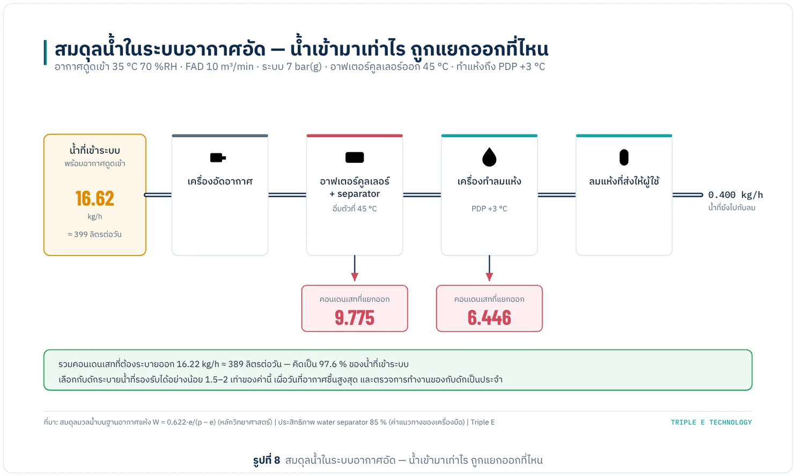
อ่านจากซ้ายไปขวา: น้ำเข้าพร้อมอากาศดูด → แยกที่อาฟเตอร์คูลเลอร์ → แยกที่ dryer → ที่เหลือไปกับลม
ตัวเลขในรูปเป็นค่าของเคสตัวอย่างตั้งต้น — ค่าของงานจริงอ่านจากการ์ดและตารางด้านบน
กล่องเขียวแนะนำเผื่อขนาดกับดักน้ำ 1.5–2 เท่า (ค่าแนวทางของเครื่องมือ)
ขั้นที่ 9
เลือกชนิดเครื่องทำลมแห้ง
คู่มือใช้งาน · แปลงหน่วยการไหลและความชื้นของอากาศอัด (Gas & Air Flow Unit Converter) · ระดับ Free
22 / 32
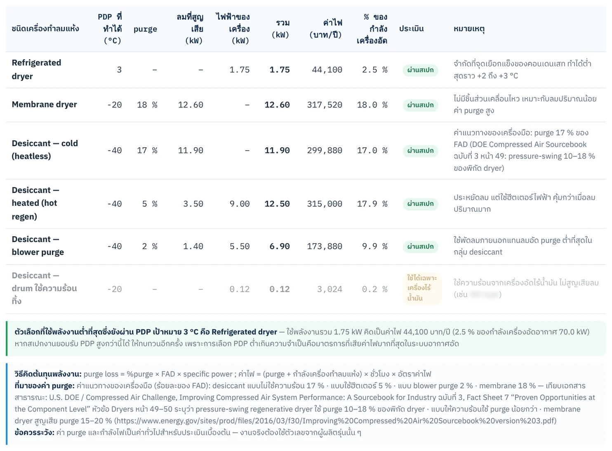
1
2
3
1
Refrigerated: PDP ได้ราว +3 °C · ไฟ 1.75 kW = 44,100 บาท/ปี (2.5 % ของเครื่องอัด)
2
Desiccant แบบไม่ใช้ความร้อน: PDP −40 °C แต่ใช้ลม purge = 11.90 kW · 299,880 บาท/ปี
3
ข้อแนะนำ — ตัวเลือกที่ใช้พลังงานต่ำสุดที่ผ่าน PDP เป้าหมาย
เลือก PDP ต่ำเกินความจำเป็น คือค่าไฟที่เสียไปทุกชั่วโมง — PDP เป้าหมายต้องมาจากความต้องการของงานจริง
ตัวเลข purge และไฟฟ้าของ dryer เป็นค่าทั่วไป — ใช้เทียบเบื้องต้น ค่าตัดสินซื้อใช้ข้อมูลผู้ผลิตของรุ่นนั้น
ลองเปลี่ยนค่า (What-if): สภาพอากาศและอุปกรณ์ เปลี่ยนภาระน้ำ
คู่มือใช้งาน · แปลงหน่วยการไหลและความชื้นของอากาศอัด (Gas & Air Flow Unit Converter) · ระดับ Free
23 / 32
| กรณี | น้ำเข้า (kg/h) | แยกที่ AC (kg/h) | ภาระ dryer (kg/h) | คอนเดนเสทรวม (kg/h) |
|---|---|---|---|---|
| โรงงาน A: 35 °C 70 %RH · AC 45 °C · PDP +3 °C | 16.62 | 9.775 | 6.446 | 16.22 |
| ฤดูฝน: ความชื้นอากาศดูด 90 %RH | 21.37 | 13.86 | 7.113 | 20.97 |
| อาฟเตอร์คูลเลอร์สกปรก: ลมออก 50 °C | 16.62 | 8.504 | 7.717 | 16.22 |
| ต้องการ PDP −40 °C | 16.62 | 9.775 | 6.839 | 16.61 |
ทำเอง: แก้ช่องในแท็บคอนเดนเสท → อ่านการ์ดผล → แก้กลับ
อาฟเตอร์คูลเลอร์ร้อนขึ้น 5 °C ภาระ dryer เพิ่มจาก 6.446 เป็น 7.717 kg/h — ล้างอาฟเตอร์คูลเลอร์ช่วย dryer โดยตรง
PDP −40 °C เครื่องมือแนะนำเปลี่ยนเป็น Desiccant — blower purge — ค่าไฟของ dryer ขึ้นหลายเท่า
ขั้นที่ 10
Specific Power: เครื่องอัดใช้ไฟต่อลมเท่าไร
คู่มือใช้งาน · แปลงหน่วยการไหลและความชื้นของอากาศอัด (Gas & Air Flow Unit Converter) · ระดับ Free
24 / 32
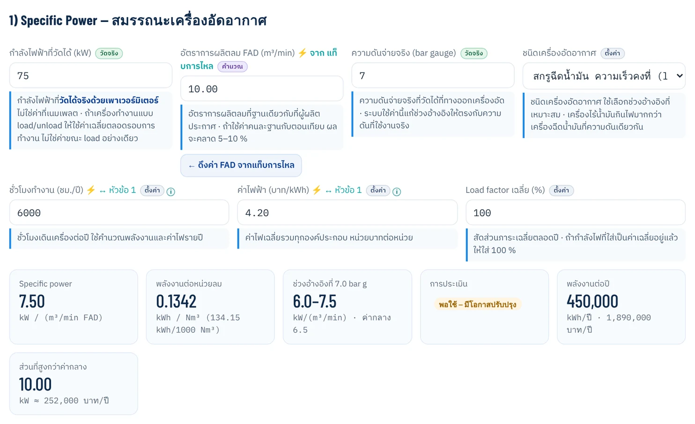
1
2
3
4
5
6
1
กำลังไฟฟ้าที่วัดได้ (kW) — วัดด้วย power meter
2
FAD (m³/min) — ดึงจากแท็บแปลงหน่วยได้
3
ความดันใช้งาน (bar g)
4
ชนิดเครื่องอัดอากาศ — ใช้เลือกช่วงอ้างอิง
5
Specific Power 7.50 kW/(m³/min)
6
การประเมิน: พอใช้ — มีโอกาสปรับปรุง
75 kW ÷ 10 m³/min = 7.50 · พลังงานต่อปี 75 × 6,000 = 450,000 kWh = 1,890,000 บาท
ส่วนที่สูงกว่าค่ากลางของช่วงอ้างอิง 10.00 kW ≈ 252,000 บาท/ปี
ตารางช่วงอ้างอิง Specific Power — อ่านป้ายกำกับให้ครบ
คู่มือใช้งาน · แปลงหน่วยการไหลและความชื้นของอากาศอัด (Gas & Air Flow Unit Converter) · ระดับ Free
25 / 32
1
2
1
แถวชนิดเครื่องที่เลือก: ดีมาก · ค่ากลาง · ควรปรับปรุงเมื่อเกิน · ค่าที่วัดได้
2
ป้ายใต้ตาราง: ช่วงอ้างอิงเป็นค่าแนวทางของเครื่องมือ ไม่มีมาตรฐานกำหนดตัวเลข
ใช้ตารางนี้คัดกรองเบื้องต้นเท่านั้น — ค่าที่ใช้ตัดสินต้องมาจากข้อมูลผู้ผลิตของรุ่นนั้น (เช่น เอกสารสมรรถนะของรุ่นที่ความดันเดียวกัน)
เทียบที่ความดันเดียวกันเสมอ — ความดันสูงขึ้น Specific Power สูงขึ้นตามธรรมชาติ
ช่วงนี้ชุดเดียวกับ Compressed Air System · ป้ายใต้ผลบอกจุดยึดจาก CAC Fact Sheet #8 (สกรูฉีดน้ำมันทั่วไป ≈ 22 bhp/100 acfm ที่ 100 psig)
⚠️ ระวัง
อย่าเขียนในรายงานว่า "ไม่ผ่านมาตรฐาน" จากตารางนี้ — เขียนว่า "สูงกว่าช่วงอ้างอิงของเครื่องมือ ควรตรวจสอบเทียบข้อมูลผู้ผลิต"
ทดสอบรั่วด้วยการจับเวลา load / unload
คู่มือใช้งาน · แปลงหน่วยการไหลและความชื้นของอากาศอัด (Gas & Air Flow Unit Converter) · ระดับ Free
26 / 32
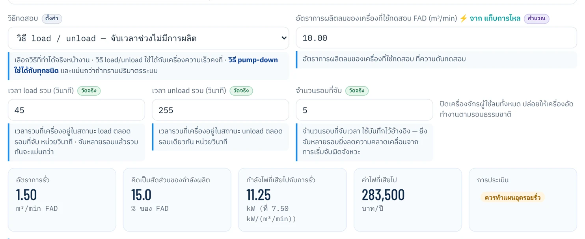
1
2
3
4
5
1
วิธีทดสอบ — load/unload หรือ pump-down ถังพักลม
2
เวลา load รวม (วินาที)
3
เวลา unload รวม (วินาที)
4
อัตรารั่ว 1.50 m³/min = 15.0 % ของ FAD
5
ค่าไฟที่เสียไป 283,500 บาท/ปี
ทดสอบช่วงไม่มีการผลิต — เครื่องยัง load อยู่เพราะต้องเติมลมที่รั่วเท่านั้น: 10 × 45 ÷ (45 + 255) = 1.50 m³/min
การประเมิน: ควรทำแผนอุดรอยรั่ว (เกณฑ์ 10 % / 20 % เป็นค่าแนวทางของเครื่องมือ)
วิธี pump-down ต้องกรอกอุณหภูมิอากาศในถัง — ผลเทียบเป็น FAD ที่สภาวะอ้างอิง ฐานเดียวกับ Compressed Air System · ใต้ผลมีหมายเหตุอ้างอิง CAC Fact Sheet #7
ผลประหยัดจากการลดความดันตั้ง
คู่มือใช้งาน · แปลงหน่วยการไหลและความชื้นของอากาศอัด (Gas & Air Flow Unit Converter) · ระดับ Free
27 / 32
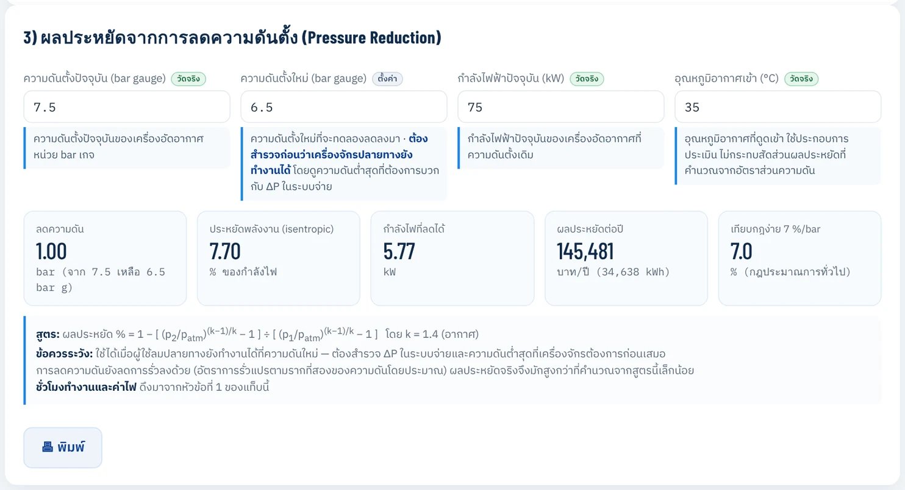
1
2
3
4
1
ความดันปัจจุบัน (bar g)
2
ความดันใหม่ — ต้องสำรวจก่อนว่าเครื่องจักรปลายทางยังทำงานได้
3
ประหยัด 7.70 % (คิดแบบ isentropic)
4
5.77 kW = 145,481 บาท/ปี
กฎประมาณ "ราว 7 % ต่อ 1 bar" เป็นกฎประมาณการทั่วไป — เครื่องมือคำนวณจากสมการจริงให้เทียบ
⚠️ ระวัง
ลดความดันทีละน้อยและเฝ้าดูเครื่องจักรที่ต้องใช้ความดันสูงสุด — ถ้าความดันตกในท่อมาก ให้แก้ท่อก่อนลดความดันตั้ง
บันทึกงาน พิมพ์ และเปิดงานเดิม
คู่มือใช้งาน · แปลงหน่วยการไหลและความชื้นของอากาศอัด (Gas & Air Flow Unit Converter) · ระดับ Free
28 / 32
1
2
3
4
1
ซ่อนคำอธิบายช่องกรอก — หน้าจอสั้นลงเมื่อคล่องแล้ว
2
พิมพ์ทุกแท็บ
3
บันทึก JSON — เก็บค่าทุกแท็บ รวมตารางติดตามน้ำรายจุด
4
โหลด JSON — เปิดไฟล์งานเดิมกลับมาทำต่อ
ระบบอากาศอัด 1 ระบบ = ไฟล์ JSON 1 ไฟล์ — ตั้งชื่อไฟล์ตามโรงงานและวันที่ตรวจ
ตารางในแต่ละแท็บมีปุ่ม CSV สำหรับนำไปทำต่อใน Excel
ข้อผิดพลาดที่พบบ่อย
คู่มือใช้งาน · แปลงหน่วยการไหลและความชื้นของอากาศอัด (Gas & Air Flow Unit Converter) · ระดับ Free
29 / 32
✗ ไม่ระบุฐานของ m³/min
✓ เขียน FAD · Nm³ · Actual กำกับทุกตัวเลข
✗ กรอกความดันเกจในช่อง kPa abs
✓ ใช้ตัวช่วย bar g → kPa abs แล้วกด ใส่
✗ สับสน PDP กับ ADP
✓ ดูคู่มือเครื่องวัดว่าวัดในท่อหรือหลังคลายความดัน
✗ ใช้ค่าเฉลี่ยออกแบบ dryer
✓ ใช้วันร้อนชื้นที่สุดของปี
✗ เลือก PDP ต่ำเกินจำเป็น
✓ PDP ต่ำ = purge มาก = ค่าไฟสูง ทุกชั่วโมง
✗ ใช้ kW ป้ายแทนค่าที่วัด
✓ Specific Power ต้องใช้ kW ที่วัดได้จริง
✗ ทดสอบรั่วขณะผลิต
✓ ต้องทดสอบช่วงไม่มีการใช้ลมเท่านั้น
✗ ตัดสินจากช่วงอ้างอิงของเครื่องมือ
✓ ช่วงอ้างอิง Specific Power เป็นค่าแนวทาง — ยืนยันกับข้อมูลผู้ผลิต
แบบฝึกหัด: โรงงาน B ระบบ 8 bar g
คู่มือใช้งาน · แปลงหน่วยการไหลและความชื้นของอากาศอัด (Gas & Air Flow Unit Converter) · ระดับ Free
30 / 32
| ข้อมูล | ค่า |
|---|---|
| FAD ตามสเปกเครื่องอัด | 6.5 m³/min |
| อากาศดูดเข้า | 38 °C · 75 %RH |
| ความดันใช้งาน · PDP หลัง dryer | 8 bar g · +3 °C |
| ลมออกอาฟเตอร์คูลเลอร์ | 43 °C |
| กำลังไฟฟ้าเครื่องอัดที่วัดได้ | 45 kW |
| ค่าอื่นทั้งหมด | ใช้ค่าตั้งต้นของเครื่องมือ |
คำถาม — กรอกแล้วตอบ
1
แท็บแปลงหน่วย: Normal = ______ Nm³/min
2
แท็บความชื้น: ADP = ______ °C
3
แท็บคอนเดนเสท: คอนเดนเสทรวม = ______ kg/h · ภาระ dryer = ______ kg/h
4
Specific Power = ______ kW/(m³/min) อยู่ในเกณฑ์ใด?
💡 เคล็ดลับ
โหลดหน้าใหม่ก่อนเริ่ม → แท็บแรกกรอก 6.5 · 38 °C · 75 %RH → แท็บอื่นแก้ค่าตามตาราง
เฉลยแบบฝึกหัด โรงงาน B
คู่มือใช้งาน · แปลงหน่วยการไหลและความชื้นของอากาศอัด (Gas & Air Flow Unit Converter) · ระดับ Free
31 / 32
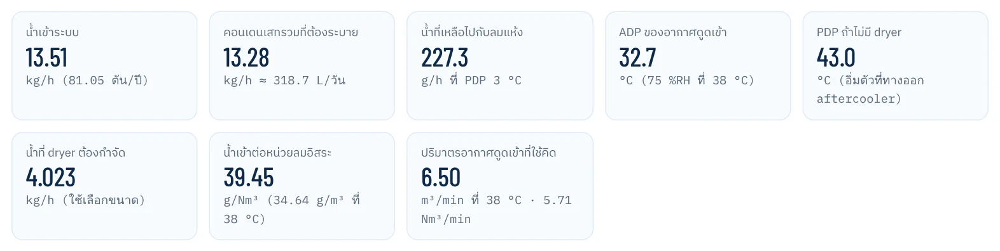
1) Normal 5.966 Nm³/min · Actual 7.146 m³/min ที่ 38 °C
2) ที่ 8 bar g PDP +3 °C → ADP -21.7 °C (ต่างกัน 24.7 K)
3) คอนเดนเสทรวม 13.28 kg/h ≈ 318.7 L/วัน · ภาระ dryer 4.023 kg/h
4) 45 ÷ 6.5 = 6.92 kW/(m³/min) — อยู่ในเกณฑ์ดี (ช่วงอ้างอิงที่ 8 bar g 6.5–8.1)
✓ ผ่าน
ได้ตัวเลขตรงกัน = ใช้เครื่องมือเป็นแล้ว · สังเกตว่าอากาศร้อนชื้นกว่าโรงงาน A ทำให้น้ำต่อ Nm³ สูงขึ้นเป็น 39.45 g/Nm³
สรุป 1 หน้า (พิมพ์ติดไว้ข้างคอมพิวเตอร์)
คู่มือใช้งาน · แปลงหน่วยการไหลและความชื้นของอากาศอัด (Gas & Air Flow Unit Converter) · ระดับ Free
32 / 32
1
แปลงหน่วย: ข้อ 1
ชนิดก๊าซ · ฐานของตัวเลข · ค่าการไหล · หน่วย
2
แปลงหน่วย: ข้อ 2–3
T · P abs · RH ณ จุดวัด · สภาวะอ้างอิง
3
แปลงหน่วย: ผล
FAD · Nm³ · Sm³ · Actual · มวล
4
ความชื้น
ความดันในท่อ · ชนิดค่าที่วัด · ค่า → PDP · ADP · ชั้น ISO
5
คอนเดนเสท: ข้อมูล
FAD · อากาศดูด (วันร้อนชื้น) · AC · PDP เป้าหมาย
6
คอนเดนเสท: ผล
คอนเดนเสทรวม · ภาระ dryer · ชนิด dryer ที่ประหยัดสุด
7
Specific Power
kW ที่วัด ÷ FAD → เทียบช่วงอ้างอิง (ค่าแนวทาง)
8
Air Leak · ลดความดัน
จับเวลา load/unload · ความดันใหม่ → บาท/ปี · บันทึก JSON
อ่านผลแล้วตรวจ
☐
ทุกตัวเลขมีฐานกำกับ
☐
PDP หรือ ADP ระบุชัด
☐
คอนเดนเสทคิดวันร้อนชื้นที่สุด
☐
Specific Power ยืนยันกับข้อมูลผู้ผลิต
อ.หนึ่ง กลับทวี / Aj. Nueng Klubtavee
tripleeenergytools.com
tripleeenergytools.com